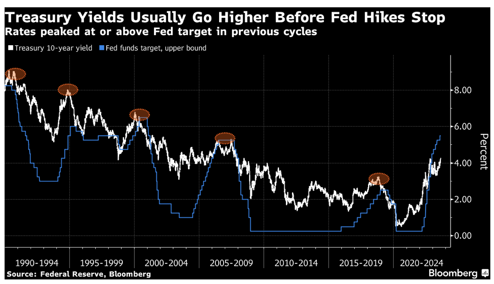

Fred's News Channel
每日新闻
投资观点
常用工具
8月18日早间新闻
根据彭博社及路透社新闻编辑整合
近半数（18/38）的香港上市的中国国有地产企业前半年利润为负，这使得市场认为中国的房地产危机正从私企向国企演变。另外，恒大在曼哈顿法院申请破产保护。（也就是说，如果恒大在大陆破产了，恒大在美的资产不会被国内债权人扣押清算？）
详情链接
中国要求国有银行加大对于汇率的干预。要求降低汇率的波动性。目前美元人民币汇率为7.35，达到了2007年以来的最低点。
详情链接
世界大型企业研究会(Conference Board/世企研)称，其美国领先经济指标在6月下降0.7%之后，7月又下降0.4%。7月的降幅符合经济学家的预期。。
个人观点：
中国私宅价格到底下降了多少，这是一个新的信息与信任的博弈。根据官方数字，住宅成交价格环比下降3%，但是很多独立的数据收集员，包括地产中介感知的是，一线城市，如上海，成交价下降15%～20%，而特殊地点，如杭州，阿里的大本营，住宅成交价格已经下降了25%+。你更信哪个版本？（因为如果一线城市下降这么多，二三线可能下降同等或更多）
然后继续看美国，我这里挂一个图，可以清晰看到过往每次美联储停止加息的时候，都是10年期国债利率高于美联储的目标利率，也就是画圈的地方，白色高过蓝色。但是目前就7月数据来看，还是蓝色高过白色，这也加大了市场认为美联储9月依旧会加息的猜想。与此同时，美股已经连续三天下跌。7月，你逃顶了么？

查看其他日期的新闻
Fred Rong
MAS Registered
RF-300558704
投资咨询,欢迎预约！
立即预约